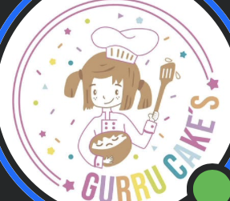
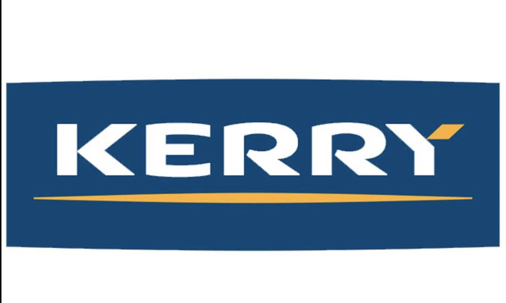
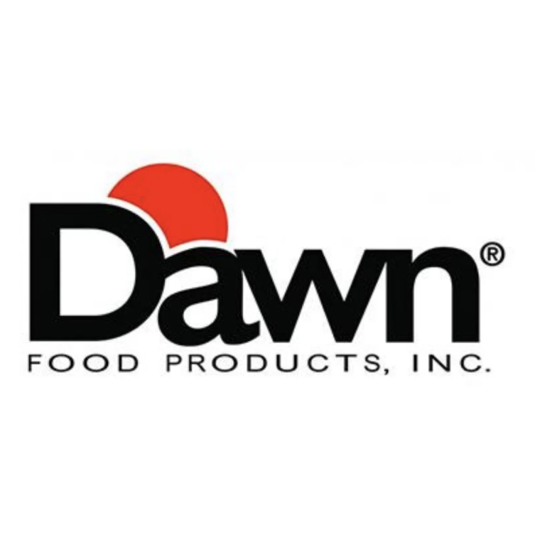

Harinas, chocolates, colorantes, moldes y todo lo que necesitas para tus creaciones — al mayoreo y menudeo.
Ver catálogoDesde la selección hasta la entrega, cuidamos cada detalle para ofrecer materia prima de calidad a negocios y aficionados. Pregunta por nuestros precios especiales de mayoreo.
Cotizar por WhatsAppMarcas e insumos con los que trabajamos.



Explora el catálogo y da clic en "Pedir por WhatsApp" en cada producto que te interese.
Te contactamos para confirmar cantidades, tiempos de entrega y forma de pago.
Cerramos el pedido directamente contigo, sin pagos en línea ni comisiones.